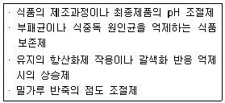
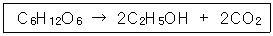

식품기사 (2003-05-25 기출문제)
1과목: 식품위생학
1. 식품첨가물의 사용 목적에서 가장 거리가 먼 것은?
- 기호성 증진
- 변질방지
- 발암방지
- 영양강화
(정답률: 73%)

2. 다음과 같은 목적과 기능을 하는 식품 첨가물은 ?

- 산미료(acidulant)
- 조미료(seasoning)
- 호료(thickening agent)
- 유화제(emulsifier)
(정답률: 90%)
3. 우유의 저온살균에 대한 설명 중 틀린 것은?
- Q열의 원인균인 리켓치아속에 속하는 세균도 사멸 된다.
- 결핵균도 사멸된다.
- 살균 후에도 상당한 수의 세균이 존재하는 것이 보통이다.
- 포스파타아제(phosphatase) 양성으로 나타난다.
(정답률: 59%)
4. 우리나라에서 물엿, 알사탕 등의 표백제로 사용하여 크게 물의를 일으켰던 유해성 물질은?
- Nitrogen trichloride
- Rongalite
- Formaldehyde
- Benzyl violet
(정답률: 56%)
5. 식품위생상 유해한 감미료와 거리가 먼 것은?
- cyclamate
- dulcin
- D-sorbitol
- p-nitro-o-toluidine
(정답률: 92%)
6. 공장폐수에서 발생할 수 있는 유해물질 및 식품오염문제를 연결한 것 중 잘못된 것은?
- 석유폐수 → 3,4 - Benzopyrene → 발암물질
- 광업소폐수 → 카드뮴(Cd) → 미나마타병
- 펄프공장폐수 → 석탄 타르(tar) → 조개류의 쓴맛
- 구리정련공장폐수 → 구리(Cu) → 녹색 굴
(정답률: 64%)
7. 다음 설명 중 경구전염병과 거리가 먼 것은?
- 비교적 소량의 균량으로 발생한다.
- 잠복기가 비교적 길다.
- 2차 감염이 거의 발생하지 않는다.
- 집단적으로 발생한다.
(정답률: 83%)
8. 발진티푸스의 균명은?
- Bacillus anthracis
- Salmonella paratyphi
- Rickettsia prowazeki
- Mycobacterium tuberculosis
(정답률: 65%)
9. 다음 중 옳게 연결된 것은?(오류 신고가 접수된 문제입니다. 반드시 정답과 해설을 확인하시기 바랍니다.)
- 간흡충 - 왜우렁이 - 쇠고기
- 광절열두조충 - 물벼룩 - 게
- 유구조충 - 돈육 - 낭미충증
- 아니사키스충 - 개 - 고등어
(정답률: 65%)
10. 정수시설(淨水施設)의 침전지에서 약품침전의 목적으로 사용하는 것은?
- 명반
- 붕산
- 염소
- 표백분
(정답률: 73%)
11. 식품취급자의 손 소독에 가장 적합한 약제는?
- 크레졸 비누액
- 역성비누액
- 포르말린
- 승홍수
(정답률: 88%)
12. 투과력이 크며 식품 저장에 널리 이용되고 있는 방사선은?
- 가시광선
- α 선
- β 선
- γ선
(정답률: 93%)
13. 동물성 식품의 변질검사에 해당되는 것은?
- 히스타민(histamine) 측정
- 산도(酸度) 측정
- 카르보닐가 측정
- 요오드가 측정
(정답률: 69%)
14. 동물성 식품에서 유래된 독소는?
- 무스카린(muscarine)
- 아미그달린(amygdalin)
- 베네루핀(venerupin)
- 에르고톡신(ergotoxin)
(정답률: 80%)
15. 플라스틱의 감별을 위한 방법으로 이용할 수 있는 물리적인 특성이 아닌 것은?
- 비중
- 경도
- 용해성
- 연소성
(정답률: 57%)
16. 전염병으로 죽은 돼지를 삶아서 먹었음에도 불구하고 사망자가 발생하였다면 다음 중 어느 균에 의한 발병일 가능성이 있는가?
- 결핵
- 탄저
- 야토병
- 브루셀라
(정답률: 78%)
17. 식품공장의 위생상태를 유지 관리하기 위하여 일반적인 조치 사항 중 가장 맞는 것은?
- 작업장과 화장실은 2일 1회 이상 청소하여야 한다.
- 온도계와 같은 계기류는 유명회사 제품을 사용하면 자체 점검할 필요가 없다.
- 우물물을 사용하는 경우 정기적으로 공공기관에 수질검사를 받고 그 성적서를 보관한다.
- 냉장시설과 창고는 월 1회 이상 청소를 하여야 한다.
(정답률: 87%)
18. 비브리오 패혈증의 예방대책을 설명한 것 중 틀린 것은?
- 간장 질환자는 해수욕을 가급적 삼가한다.
- 생선회 원료는 수돗물에 잘 씻는다.
- 서해안에 강물이 유입되는 장소는 균의 증감을 감시한다.
- 생선회를 냉장고에 일정시간 보관하였다가 먹는다.
(정답률: 87%)
19. 농약에 의한 식품오염에 대한 설명으로 적합하지 않은 것은?
- 유기인제 농약은 대부분 극독약이므로 급성중독에 의한 사고가 많다.
- 농작물에 살포된 농약은 비, 바람, 햇빛 등의 외적 작용과 작물의 성장, 대사 등의 내적작용에 의하여 분해된다.
- 유기염소제 농약은 제조사용이 금지되어 있지만 아직도 토양에서 검출되고 있다.
- 유기수은제 농약은 축적성이 거의 없다.
(정답률: 76%)
20. 식품의 부패검사법 중 화학적 검사법이 아닌 것은?
- 휘발성 아민 측정
- 식물성 식품의 산도측정
- 어육의 단백질 침전 반응
- 경도측정
(정답률: 89%)
2과목: 식품화학
21. 효소에 의한 식품의 변색현상은?
- 김이 저장 중 고유한 색깔을 잃는 것
- 새우나 게를 가열하면 붉은 색으로 변하는 것
- 사과를 잘라 공기 중에 두었을 때 갈변하는 것
- 오이의 녹색이 저장 중에 녹갈색으로 변하는 것
(정답률: 84%)
22. 새우나 게 등의 겉껍질을 구성하고 있는 키틴(chitin)의 단위 성분은?
- 2-N-acetyl glucosamine
- 2-N-acetyl galactosamine
- Glucuronic acid
- Galacturonic acid
(정답률: 42%)
23. 단백질의 변성에 영향을 주는 요소와 거리가 먼 것은?
- 가열 또는 동결
- 중금속 또는 염류
- 기계적 교반 또는 압력
- 여과 또는 한외여과
(정답률: 82%)
24. 고추의 매운 맛을 나타내는 성분은?
- 피페린(piperine)
- 차비신(chavicine)
- 진제론(zingerone)
- 캡사이신(capsaicin)
(정답률: 97%)
25. 마이야르(Maillard) 반응의 최종단계(final stage)에서 일어나는 화학반응이 아닌 것은?
- 알돌(aldol) 축합반응
- 중합(polymerzation)반응
- 스트랙커(strecker) 분해반응
- 엔올화(enolization)
(정답률: 47%)
26. β -amylase가 작용하는 곳은?
- α -1, 4-glucoside 결합
- β -1, 4-glucoside 결합
- α -1, 6-glucoside 결합
- β -1, 6-glucoside 결합
(정답률: 59%)
27. 밀가루 반죽의 길게 늘어나는 성질을 측정하는 기기는?
- 익스텐소그래프(extensograph)
- 아밀로그래프(amylograph)
- 패리노그래프(farinograph)
- 텐더로미터(tenderometer)
(정답률: 87%)
28. 요오드가(iodine value)란 지방의 어떤 특성을 표시하는 기준인가?
- 산패도
- 경화도
- 유리지방산 함량
- 불포화도
(정답률: 60%)
29. 감자의 이화학적 특성을 올바르게 설명한 것은?
- 싹이 난 부분에 사포닌이라는 독소를 함유하고 있다.
- 감자에 존재하는 폴리페놀 계통의 티로신(tyrosine)은 갈변을 일으키는 물질중의 하나이다.
- 감자에 함께 존재하는 카탈라제(catalase)가 갈변을 일으키는 효소이다.
- 얄라핀(jalapin)은 상처부위에서 볼 수 있는 우유 같은 액체이다.
(정답률: 60%)
30. 비타민 B2의 광분해시 알칼리성에서 생기는 물질은?
- 루미플라빈(Lumiflavin)
- 루미크롬(Lumichrome)
- 리비톨(ribitol)
- 이소알록사진(isoalloxazine)
(정답률: 79%)
31. 저칼로리의 설탕대체품으로 이용되면서 당뇨병 환자들을 위한 식품에 이용할 수 있는 성분은?
- 자일리톨
- 젖당
- 맥아당
- 갈락토오스
(정답률: 91%)
32. 조란류에 대하여 잘못 설명한 것은?
- 계란 흰자위 단백질로는 오발부민(ovalbumin)이 있다.
- 날계란에 함유된 아비딘(avidin)은 핵단백질과 결합되어 있어 비오틴(biotin)의 활성을 방해한다.
- 알류에는 유독성분이 없으나 계란의 알깍지 및 난각막에는 미세한 구멍이 있어 세균이 침입하여 부패되는 수가 있다.
- 계란 노른자위 단백질에 인지질과 비텔린(vitellin)과의 결합물이 있는데 이것이 바로 오보뮤코이드(ovomucoid)이다.
(정답률: 50%)
33. 사후 경직이 일어나는 경우 생성되는 육류단백질은?
- 액토미오신
- 미오글로빈
- 트리메틸아민
- 젤라틴
(정답률: 70%)
34. 다음은 일반적으로 알려진 마늘의 생리활성 및 효능을 나타낸 것이다. 틀린 것은?
- 항당뇨병 작용
- 항암 작용
- 혈(血)중 콜레스테롤 감소 작용
- 항혈전 작용
(정답률: 64%)
35. 유화제 분자내의 친수기와 소수기의 균형은 어느 값으로 표시하는가?
- HLB값
- HBC값
- HKO값
- HSB값
(정답률: 83%)
36. 다음 신체구성 물질 중 기초대사량과 가장 관련이 깊은 것은?
- 골격의 양
- 근육의 양
- 피하지방의 양
- 혈액의 양
(정답률: 91%)
37. 육류나 육류 가공품의 육색소를 나타내는 주된 성분으로 육류조직에 함유되어 있는 것은?
- 미오글로빈
- 헤모글로빈
- 베탈라인
- 사이토크롬
(정답률: 86%)
38. 2-phenyl-3, 5, 7-trihydroxyflavylium chloride 의 기본 구조를 가지고 있는 식품의 색소 성분은?
- carotenoids
- chlorophylls
- anthoxanthins
- anthocyanins
(정답률: 47%)
39. 유지의 경화(hardening)란?
- 유지로부터 수소를 분리하여 불포화지방산을 만드는 것이다.
- 고체 유지를 액체 유지로 만드는 것이다.
- 고체 유지를 반액체 유지로 만드는 것이다.
- 액체 유지를 고체 유지로 만드는 것이다.
(정답률: 78%)
40. 세사몰(sesamol)이 들어 있는 식품과 그 작용은?
- 콩기름 - 항산화제
- 땅콩기름 - 항암물질
- 들기름 - 항암물질
- 참기름 - 항산화제
(정답률: 63%)
3과목: 식품가공학
41. 다음 중 Low methoxy pectin(LMP)에 대한 설명이 잘못된 것은?
- 젤을 형성할 수 있는 pH 범위가 비교적 넓다.
- 설탕을 넣지 않으면 젤을 형성하지 못한다.
- 설탕대신 칼슘 등을 넣으면 안정된 젤을 형성한다.
- 다이어트용 잼과 젤리에 이용될 수 있다.
(정답률: 70%)
42. 도정도가 적은 것에서 큰 순서로 나열된 것은?
- 현미 → 7분도미 → 백미 → 5분도미
- 현미 → 백미 → 7분도미 → 5분도미
- 현미 → 7분도미 → 5분도미 → 백미
- 현미 → 5분도미 → 7분도미 → 백미
(정답률: 79%)
43. 증기압축식 냉동장치에 흔히 사용되는 냉동제가 아닌 것은?
- 암모니아(ammonia)
- 프레온12(CCl2F2)
- 프레온22(CHClF2)
- 액체질소(LIQUID-N)
(정답률: 18%)
44. 아이스크림 제조공정이 바르게 된 것은?
- 살균 → 균질화 → 숙성 → 냉동
- 균질화 → 숙성 → 냉동 → 살균
- 살균 → 숙성 → 균질화 → 냉동
- 숙성 → 살균 → 균질화 → 냉동
(정답률: 63%)
45. B. stearothermophilus(z=10℃)를 121℃에서 열처리하여 균농도를 1/10,000로 감소시키는데 15분이 소요되었다. 살균온도를 125℃로 높여 15분간 살균한다면 균의 치사율은 얼마나 커지겠는가?(오류 신고가 접수된 문제입니다. 반드시 정답과 해설을 확인하시기 바랍니다.)
- 3.89배
- 4.34배
- 5.45배
- 6.25배
(정답률: 25%)
46. 피단(皮蛋)제조시 주로 사용하는 방법은?
- 산침투법
- 알칼리 침투법
- 산, 알칼리 혼합액 침투법
- 탄산가스 처리법
(정답률: 67%)
47. 식육 연화제로서 공업적으로 이용하는 효소가 아닌 것은?
- 파파인(papain)
- 피신(ficin)
- 트립신(trypsin)
- 브로멜린(bromelin)
(정답률: 71%)
48. 신선한 식품을 냉장고에 저온저장하면 저장기간을 연장할 수 있다. 저온저장의 효과가 아닌 것은?
- 미생물의 발육 속도를 느리게 한다.
- 수분 손실을 막는다.
- 호흡 작용 속도를 느리게 한다.
- 효소 및 화학 반응속도를 느리게 한다.
(정답률: 80%)
49. 두부 제조시 응고시키는 두유의 가장 적당한 온도는?
- 30∼40 ℃
- 50∼60 ℃
- 70∼80 ℃
- 90∼100 ℃
(정답률: 56%)
50. 분유 및 계란분을 제조하는데 가장 알맞은 건조기는?
- 분무 건조기(spray drier)
- 킬른 건조기(kiln drier)
- 터널 건조기(tunnel drier)
- 냉동 건조기(freeze drier)
(정답률: 85%)
51. 경화유 제조에 사용되는 수소 첨가용 촉매는?
- Pd
- Au
- Fe
- Ni
(정답률: 85%)
52. 두부제조용 응고제가 아닌 것은?
- MgCl2
- CaSO4
- NaCl
- CaCl2
(정답률: 64%)
53. 수산화 나트륨을 가하여 유리되는 지방산을 비누화하여 제거하는 유지정제법은?
- 알칼리법
- 흡착법
- 황산법
- 여과법
(정답률: 69%)
54. 증발기 선정시 크게 영향을 미치지 않는 feed liquor의 성질은?
- viscosity
- condensing
- scaling
- foaming
(정답률: 42%)
55. 햄이나 베이컨을 만들 때 훈연(smoking)을 한다. 다음 중 훈연의 목적과 관계가 없는 것은?
- 향기의 부여
- 제품의 색깔 향상
- 보존성 부여
- 조직의 연화
(정답률: 76%)
56. 감의 떫은 맛을 없애는 처리의 원리로서 옳은 것은?
- shibuol(diosprin)을 용출 제거시킨다.
- shibuol(diosprin)을 불용성 물질로 변화시킨다.
- shibuol(diosprin)을 당분으로 전환시킨다.
- shibuol(diosprin)을 분해시킨다.
(정답률: 70%)
57. 마카로니는 무슨 면인가?
- 냉면
- 선절면
- 연면
- 압출면
(정답률: 83%)
58. 제빵시 설탕첨가의 목적과 가장 거리가 먼 것은?
- 노화방지
- 빵표면의 색깔증진
- 효모의 영양원
- 유해균의 발효억제
(정답률: 69%)
59. 레토르트(retort)의 압력계 눈금이 15psi를 나타내었는데 잘못 조작하여 retort속의 수증기에 공기가 50% 혼합되었다. 이 때 retort 안의 온도는 몇 ℃정도가 되겠는가?
- 100℃
- 112℃
- 121℃
- 130℃
(정답률: 43%)
60. 미생물에 의한 변질과 가장 관계 깊은 것은?
- 살균부족
- 수소팽창
- 패널링
- 관 내면의 부식
(정답률: 63%)
4과목: 식품미생물학
61. 일반적으로 세균포자 중에 특이하게 존재하는 물질은?
- Dipicolinic acid
- Magnesium(Mg)
- Phycocyanin
- Oxalic acid
(정답률: 53%)
62. 대표적인 포자(spore) 형성균은?
- Bacillus subtilis
- Esherichia coli
- Acetobacter rancens
- Streptococcus cremoris
(정답률: 68%)
63. 미생물의 세포수를 세는데 쓰이는 것은?
- Micrometer
- Haematometer
- Refractometer
- Burri 씨관
(정답률: 83%)
64. 광합성 무기영양균(photolithotroph)과 관계 없는 것은?
- 에너지원을 빛에서 얻는다.
- 보통 H2S를 수소 수용체로 한다.
- 녹색황세균과 홍색황세균이 이에 속한다.
- 통성 혐기성균이다.
(정답률: 64%)
65. 초산균(Acetobacter)에 관한 설명으로 옳지 않은 것은?
- 초산균 속은 Gram 양성 무포자 간균으로 운동성이 있는 것과 없는 것이 있다.
- 액체배지에서 피막을 형성하며 에탄올을 산화하여 초산을 만드는 것이 있다.
- 초산균 중에는 식초발효액에 혼탁을 일으키고 불쾌한 에스테르(ester)를 생성하거나 생성된 초산을 과산화 하는 유해한 종도 있다.
- 초산균은 쉽게 변이를 일으키며 특히 40℃ 이상의 고온에서는 이상형태를 보이고 집락의 S → R변이 또는 균체 색 등에 변이가 잘 일어난다.
(정답률: 45%)
66. 다음 보기 중 빵, 육류, 우유 등에 붉은 색으로 변하는 세균은?
- Acetobacter xylinum
- Serratia marcescens
- Chromobacterium lividum
- Pseudomonas fluorescens
(정답률: 62%)
67. 자낭에서 나와 포자끼리 접합하여 2배체를 형성하는 효모속은?
- Candida 속
- Debaryomyces 속
- Endomycopsis 속
- Saccharomyces 속
(정답률: 56%)
68. 미생물의 증식 곡선에 있어서 다음 기(期,phase)중 세포의 생리적 활성이 강하고 세포의 크기가 일정하며 세포수가 급격히 증가하는 기(期)는?
- 유도기
- 대수기
- 정상기
- 사멸기
(정답률: 84%)
69. Homo 젖산균과 Hetero 젖산균에 대한 설명 중 옳은 것은?
- Leuconostoc 속은 Homo형이고, Pediococcus 속은 Hetero형이다.
- Homo 젖산균은 당으로부터 젖산, 에탄올, 초산을 생성하며 Hetero 젖산균은 젖산만을 생성한다.
- EMP 경로에 따라서 포도당 1mole에 대해 2mole의 ATP가 생성되는 것이 Homo 젖산발효이다.
- 대부분의 Lactobacillus 속은 Hetero형이다.
(정답률: 72%)
70. 곰팡이 균총(colony)의 색깔은 곰팡이의 종류에 따라 다르다. 이 균총의 색깔은 다음의 어느 것에 의해서 주로 영향을 받게 되는가?
- 포자
- 기중균사(영양균사)
- 기균사
- 격막(격벽)
(정답률: 62%)
71. 다음 진균류(Eumycetes) 중 격막(septum)이 없는 것은?
- 담자균류
- 자낭균류
- 조상균류
- 불완전균류
(정답률: 43%)
72. Gram 염색에 대한 설명 중 틀린 내용은?
- Escherichia coli 는 Gram 양성이다.
- Gram 염색시약에 crytal violet가 필요하다.
- Gram 염색시약에 lugol액이 필요하다.
- Staphylococcus aureus 는 Gram 양성이다.
(정답률: 76%)
73. 미생물의 이용 분야와 거리가 먼 것은?
- 균체의 이용
- 효소의 이용
- 양조, 발효식품의 생산
- 건조 가공
(정답률: 88%)
74. 다음 균주 중 분생포자(conidia)를 만드는 것은?
- Penicillium notatum
- Mucor mucedo
- Toluraspora fermentati
- Thamnidium elegans
(정답률: 43%)
75. 미생물 정량법(Microbial bioassay)이란?
- 미생물, 증식속도를 정량
- 비타민, 아미노산 등을 미생물 증식에 의하여 정량
- 미생물의 생장을 미세한 정도까지 정량
- 미생물의 미세부분을 정량
(정답률: 50%)
76. Schizosaccharomyces 속 효모의 무성 생식방법은?
- 자낭포자 형성법
- 분열법
- 양극출아법
- 접합포자형성법
(정답률: 60%)
77. 식품공장의 파아지(phage) 대책으로 부적당한 것은?
- 공장주변을 청결히 한다.
- 공장 내의 공기를 자주 바꾸어 준다.
- 2종 이상의 균주 조합 계열을 만들어 2∼3일 마다 이 계열을 바꾸어 사용한다.
- 용기의 살균처리를 철저히 한다.
(정답률: 67%)
78. 곰팡이에 의한 빵의 변패를 방지하기 위한 방법으로 옳지 않은 것은?
- 적절한 냉각 및 포장 전 빵의 응축수 제거
- 반죽에 보존료 첨가
- 공장의 공기를 여과, 자외선 살균
- 빵 반죽 발효시간 연장
(정답률: 87%)
79. 미생물의 증식을 억제하는 항생물질 중 세포벽 합성을 저해하는 것은?
- erythromycin
- tetracycline
- penicillin
- chloramphenicol
(정답률: 81%)
80. 클로렐라의 설명 중 틀린 것은?
- 클로로필(chlorophyll)을 갖는 구형이나 난형의 단세포 조류이다.
- 건조물은 약 50%가 단백질이고 아미노산과 비타민이 풍부하다.
- 단위 면적당 연간 단백질 생산량은 대두의 50배 정도이다.
- 태양에너지 이용율은 일반 재배식물과 같다.
(정답률: 63%)
5과목: 생화학 및 발효학
81. 앙금질이 끝난 청주를 가열(火入)하는 목적과 관계가 없는 것은?
- 저장 중 변패를 일으키는 미생물의 살균
- 청주 고유의 색택형성 촉진
- 용출되어 잔존하는 효소의 파괴
- 향미의 조화 및 숙성의 촉진
(정답률: 52%)
82. 당대사 과정 중 일어나는 혐기적 초기 단계의 ATP 생성 기구는?
- Oxidative phosphorylation
- Substrate level phosphorylation
- TCA cycle
- Photophosphorylation
(정답률: 30%)
83. 아미노산 대사반응을 포함한 여러 곳에서 비타민 일종인 피리독살 인산(Pyridoxal phosphate)이 필요하다. 피리독살 인산이 필요하지 않는 생체 내 화학반응은?
- 글리코겐(Glycogen)의 인산화 반응(Phosphorylation)
- 간의 우레아 회로(Urea cycle) 반응
- 아미노산의 아미노기 전이 반응(Transaminase)
- 아미노산의 탈카르복실화 반응(Decarboxylase)
(정답률: 49%)
84. 비타민(Vitamin) B12 에 관한 설명 중 잘못된 것은?
- Vitamin B12는 주로 발효법에 의해 공업적으로 생산된다.
- 미생물 중에는 Vitamin B12가 필요한데도 전혀 생합성할 수 없는 것이 있다.
- Vitamin B12는 배지에 미량의 COCl2· 6H2O를 첨가하면 생산량이 증가된다.
- Vitamin B12의 생합성이 뛰어난 미생물은 곰팡이와 효모이다.
(정답률: 44%)
85. 광합성(Photosynthesis) 중 암반응에서 CO2를 탄수화물로 환원시키는데 필요한 것은?
- ATP 와 NADP
- NADP 와 ADP
- NADPH 와 ATP
- NADP 와 NADPH
(정답률: 68%)
86. 여러가지 비타민은 조효소(Coenzyme)의 구성 성분이 된다. 다음 항목에서 CoA의 성분이 되는 비타민은?
- 티아민(thiamine)
- 리보플라빈(riboflavin)
- 니코틴산(nicotinic acid)
- 판토테인산(panthothenic acid)
(정답률: 40%)
87. 단백질의 아미노산 배열은 DNA의 뉴클레오타이드(nucleotide) 배열에 의하여 결정된다. 이러한 유전자(DNA)의 암호(code)는 몇 개의 뉴클레오타이드에 의하여 구성되는가?
- 1개
- 2개
- 3개
- 4개
(정답률: 69%)
88. 제빵효모 생산을 위해서 사용되는 균주로서 구비해야 할 특성이 아닌 것은?
- 물에 잘 분산될 것
- 단백질 함량이 높을 것
- 발효력이 강력할 것
- 증식속도가 빠를 것
(정답률: 79%)
89. 다음 중 케토제닉 아미노산(ketogenic amino acid)은 어느 것인가?
- 알라닌(alanine)
- 프롤린(proline)
- 로이신(leucine)
- 글리신(glycine)
(정답률: 29%)
90. 세포내에서 혐기성 또는 호기성 산화반응에서 생기는 에너지가 어느 화합물로 저장되는가?
- nucleic acid
- ATP
- NADP
- Cyclic AMP
(정답률: 72%)
91. 효모에 의한 알콜발효의 이론식은 다음과 같다. 발효과정에서 효모의 생육 등으로 알콜이 소비되어 실제 수득율이 95% 일 때 포도당 1kg으로부터 생산되는 알콜은 얼마인가?

- 약 440 g
- 약 460 g
- 약 485 g
- 약 511 g
(정답률: 50%)
92. 산화 환원 효소가 아닌 것은?
- alcohol dehydrogenase
- glucose oxidase
- lipase
- acyl-CoA dehydrogenase
(정답률: 84%)
93. 인지질의 생합성에 관여하는 요소들 중 불필요한 것은?
- choline
- kinase, transferase, ATP 및 CTP
- phospholipase A, B, ATP 및 CTP
- 1, 2 - diglyceride
(정답률: 50%)
94. 셀룰로오스(cellulose)를 기질로 하였을 때 단세포 단백질을 직접 발효 생산하기 위하여 쓸 수 있는 균은?
- Candida utilis
- Cellulomonas flavigena
- Pseudomonas ovalis
- Aspergillus oryzae
(정답률: 53%)
95. 핵산을 구성하는 성분이 아닌 것은?
- 아데닌(adenine)
- 티민(thymine)
- 우라실(uracil)
- 시토크롬(cytochrome)
(정답률: 64%)
96. 과일주 향미의 주성분이라고 할 수 있는 것은?
- 알콜(alcohol) 성분
- 에테르 유도체(ether derivatives)
- 에스테르 및 유도체(esters and derivatives)
- 글루탐산(glutamate)
(정답률: 65%)
97. 산화적 인산화(Oxidative phosphorylation) 과정 중 전자가 전달되면서 생체에너지 ATP가 생성되는데 필요하지 않은 것은?
- pH gradient
- proton motive force
- ATP synthase
- nucleus membrane
(정답률: 52%)
98. Corynebacterium glutamicum 을 사용하여 Glutamic acid 발효시킬 때 틀린 것은?
- NH3가 배지중에 있어야 하고 호기조건하에서 행한다.
- 비오틴(biotin)이 미량 배지 중에 있어야 한다.
- 비오틴(biotin)이 과량 포함되어 있어야 한다.
- 주로 EMP 경로를 거치나 일부는 HMP 경로를 거친다.
(정답률: 70%)
99. 생체 조직은 포도당(glucose)로부터 젖산(lactic acid)을 얻는데 이 과정을 무엇이라 하는가?
- Oxidative phosphorylation
- Aerobic glycolysis
- Reductive phosphorylation
- Anaerobic glycolysis
(정답률: 50%)
100. 효소를 고정화 시켰을 때 나타나는 일반적인 현상이 아닌 것은?
- 반응 생성물의 순도 및 수율이 증가한다.
- 안정성이 증가한다.
- 공업적 이용도가 증가한다.
- 새로운 효소작용을 나타낸다.
(정답률: 77%)